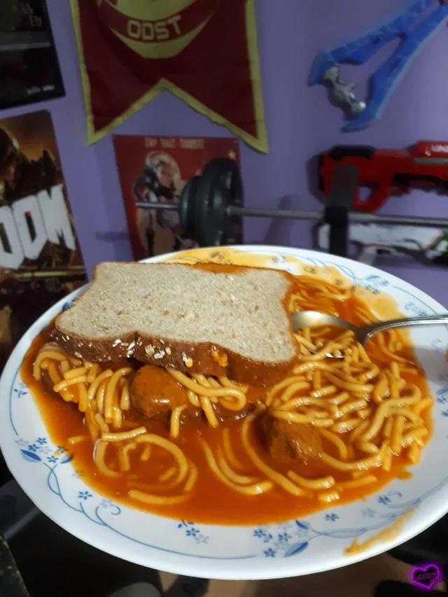

Spaghetti Sandwich

That's just waste of good spaghetti!.
Ingredients
Spaghetti
Tomato sauce
Toast Bread
1 tablespoon olive oil
2 cloves garlic, minced
3 cups tomato puree
3 cups water
¼ cup olive oil
1 teaspoon salt, or to taste
¼ cup olive oil
2 teaspoons red chili flakes, or to taste
6 ounces dry spaghetti
salt to taste
Recipe
- Gather the ingredients.
- Heat olive oil in a pot over medium heat. Add garlic and sizzle until it starts to turn golden and fragrant, about 1 minute. Stir in tomato puree, water, and salt. Bring to a simmer on medium-high. Once simmering, reduce to low heat and keep warm.
- Pour olive oil into a large non-stick skillet over medium-high heat, season with chili flakes and heat until chili flakes start to sizzle, for 1 minute. Add raw spaghetti and toss until well coated with chili oil. Pour in about 3 cups of tomato broth and, using tongs, move pasta from side to side to evenly distribute tomato broth. Cook, occasionally moving pasta from side to side with tongs, all facing the same direction, until most of the broth has been absorbed or evaporated, and the spaghetti starts frying in the pan.
- Turn spaghetti over with tongs, and evenly arrange in the pan. Keep cooking until the pasta starts to brown, and even lightly chars. Add about 2 more cups of tomato broth, and repeat the process. Continue cooking until the spaghetti is as charred as you like , and cooked to your desired doneness.
- Put it all in bread
- Get medical help.
Congrats! You've brought this cursed thing upon this world, now dispose of it, it;s for the better.
Return to the main